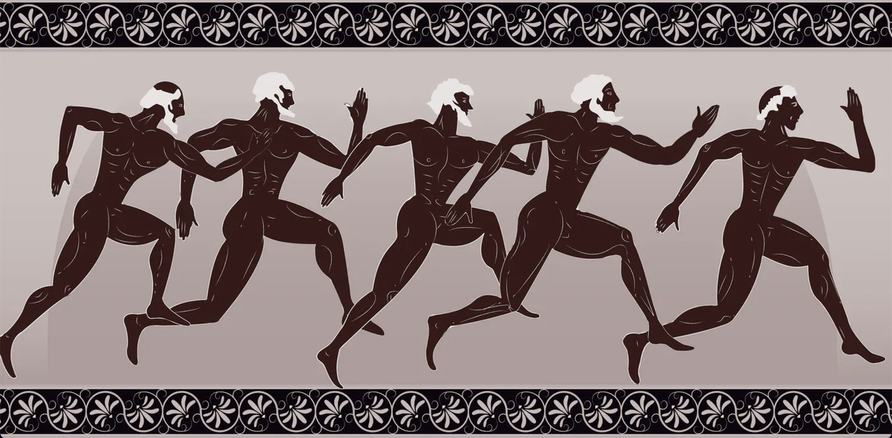

Running was officially considered a sport in 776 B.C.E in the town of Olymbia in Ancient Greece, but the first marathon may have taken place in 490 B.C.E. The legend goes that Pheiddipedes-a Greek soldier-left the town he lived in to deliver news to Persia. Pheiddipedes, living in the town, Marathon, ran 25 miles to Athens in one day.
While people hold mixed beliefs on the accuracy of this story, many historians believe it's truth being that it was first mentioned in the prominent works of Pluarch.

Exercise is important for both physical and mental health. If you're looking to way to start, running is an easy, affordable way to get your exercise without going to the gym.
To start running, all you need is a pair of good sneakers and some aethleisure. There is no special equitment or previous experience needed, and you don't need to worry about going to a gym as long as you live in a neighborhood with sidewalks!

While running shoes can be expensive, they last for a long time and are a good investment. It's important to use shoes that support your feet and ankles, sneakers with little support--like vans or converse--are not ideal. If you run with these types of shoes, you run the risk of getting injured, and your experience will be less enjoyable. Brands like Nike and Adidas have great options in various different styles, such as the ones shown below.


Wearing the right clothes while running is important to give your body enough flexability to move, and enough room to breathe and prevent sweating. Brands like Lululemon, Set Active, and Nike have cute, comfortable, high quality pieces that will last.